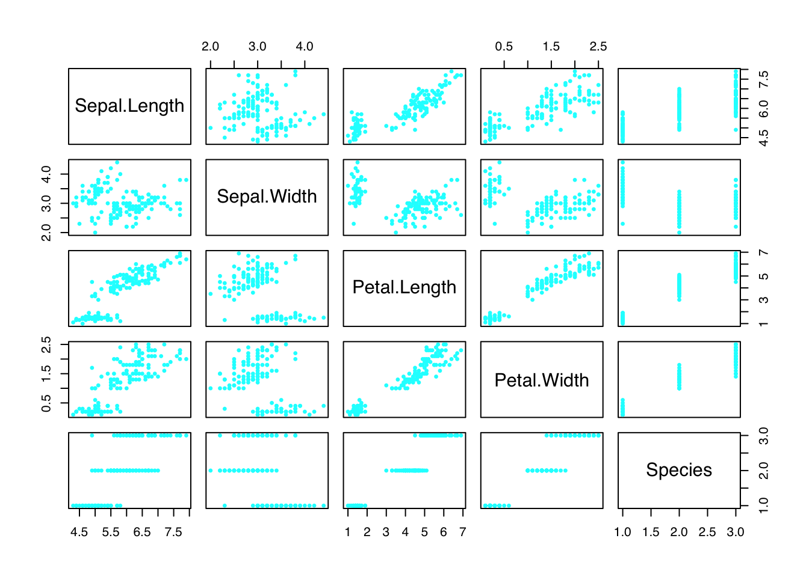

par(family = "sans")
plot(iris, pch = 20, cex = .75, col = "cyan")
\(y = \alpha+\beta{x}^2\)
Header
<h4 class="card-title">Is it working?</h4>
<p class="card-text">Some quick example text to build on the card title and make up the bulk of the card's content.</p>Header
<h4 class="card-title">Secondary card title</h4>
<p class="card-text">Some quick example text to build on the card title and make up the bulk of the card's content.</p>Header
<h4 class="card-title">Success card title</h4>
<p class="card-text">Some quick example text to build on the card title and make up the bulk of the card's content.</p>Header
<h4 class="card-title">Danger card title</h4>
<p class="card-text">Some quick example text to build on the card title and make up the bulk of the card's content.</p>Header
<h4 class="card-title">Warning card title</h4>
<p class="card-text">Some quick example text to build on the card title and make up the bulk of the card's content.</p>Header
<h4 class="card-title">Info card title</h4>
<p class="card-text">Some quick example text to build on the card title and make up the bulk of the card's content.</p>Header
<h4 class="card-title">Light card title</h4>
<p class="card-text">Some quick example text to build on the card title and make up the bulk of the card's content.</p>Header
<h4 class="card-title">Dark card title</h4>
<p class="card-text">Some quick example text to build on the card title and make up the bulk of the card's content.</p><h2 class="accordion-header" id="headingOne">
<button class="accordion-button collapsed" type="button" data-bs-toggle="collapse" data-bs-target="#collapseOne" aria-expanded="false" aria-controls="collapseOne">
Accordion Item #1
</button>
</h2>
<div id="collapseOne" class="accordion-collapse collapse" aria-labelledby="headingOne" data-bs-parent="#accordionExample" style="">
<div class="accordion-body">
<strong>This is the first item's accordion body.</strong> It is shown by default, until the collapse plugin adds the appropriate classes that we use to style each element. These classes control the overall appearance, as well as the showing and hiding via CSS transitions. You can modify any of this with custom CSS or overriding our default variables. It's also worth noting that just about any HTML can go within the <code>.accordion-body</code>, though the transition does limit overflow.
</div>
</div><h2 class="accordion-header" id="headingTwo">
<button class="accordion-button collapsed" type="button" data-bs-toggle="collapse" data-bs-target="#collapseTwo" aria-expanded="false" aria-controls="collapseTwo">
Accordion Item #2
</button>
</h2>
<div id="collapseTwo" class="accordion-collapse collapse" aria-labelledby="headingTwo" data-bs-parent="#accordionExample" style="">
<div class="accordion-body">
<strong>This is the second item's accordion body.</strong> It is hidden by default, until the collapse plugin adds the appropriate classes that we use to style each element. These classes control the overall appearance, as well as the showing and hiding via CSS transitions. You can modify any of this with custom CSS or overriding our default variables. It's also worth noting that just about any HTML can go within the <code>.accordion-body</code>, though the transition does limit overflow.
</div>
</div><h2 class="accordion-header" id="headingThree">
<button class="accordion-button collapsed" type="button" data-bs-toggle="collapse" data-bs-target="#collapseThree" aria-expanded="false" aria-controls="collapseThree">
Accordion Item #3
</button>
</h2>
<div id="collapseThree" class="accordion-collapse collapse" aria-labelledby="headingThree" data-bs-parent="#accordionExample">
<div class="accordion-body">
<strong>This is the third item's accordion body.</strong> It is hidden by default, until the collapse plugin adds the appropriate classes that we use to style each element. These classes control the overall appearance, as well as the showing and hiding via CSS transitions. You can modify any of this with custom CSS or overriding our default variables. It's also worth noting that just about any HTML can go within the <code>.accordion-body</code>, though the transition does limit overflow.
</div>
</div>